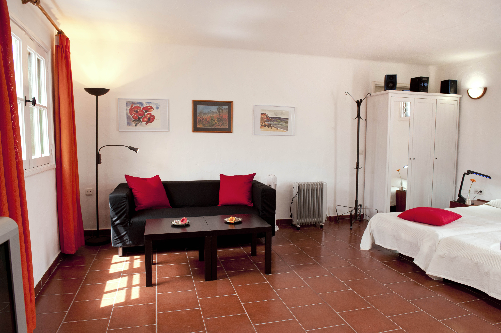
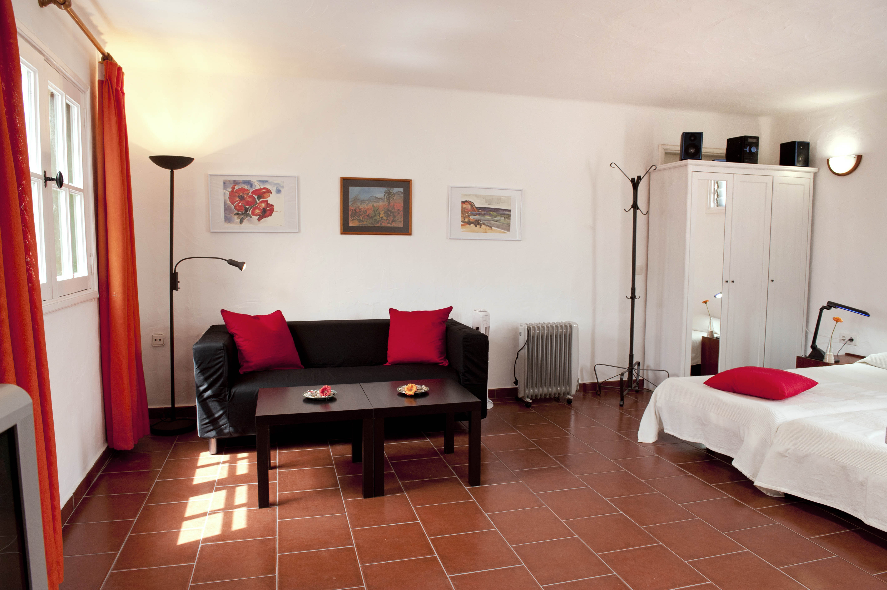
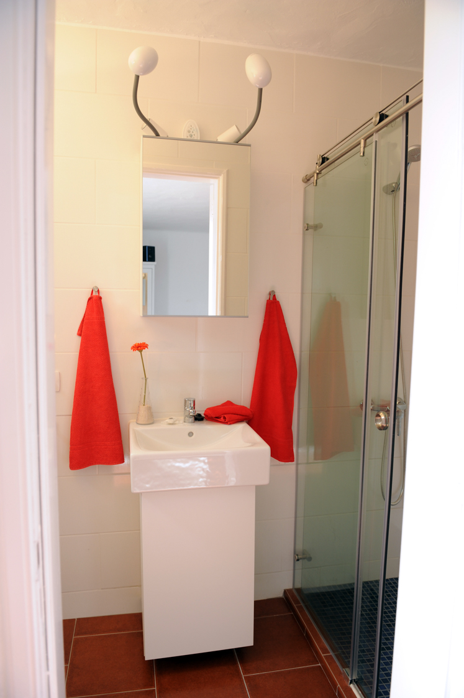
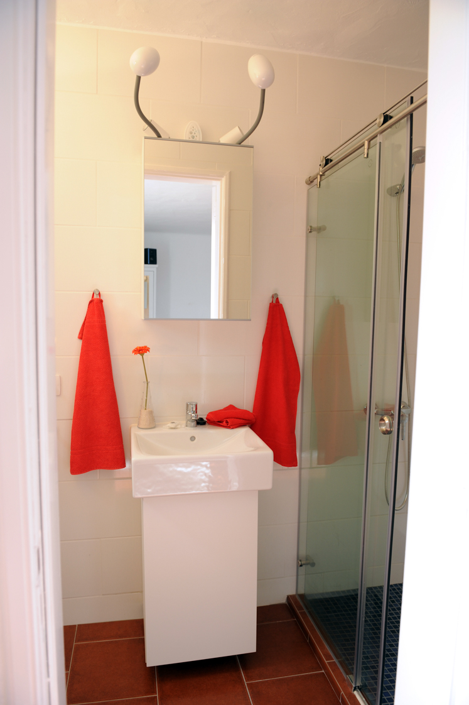
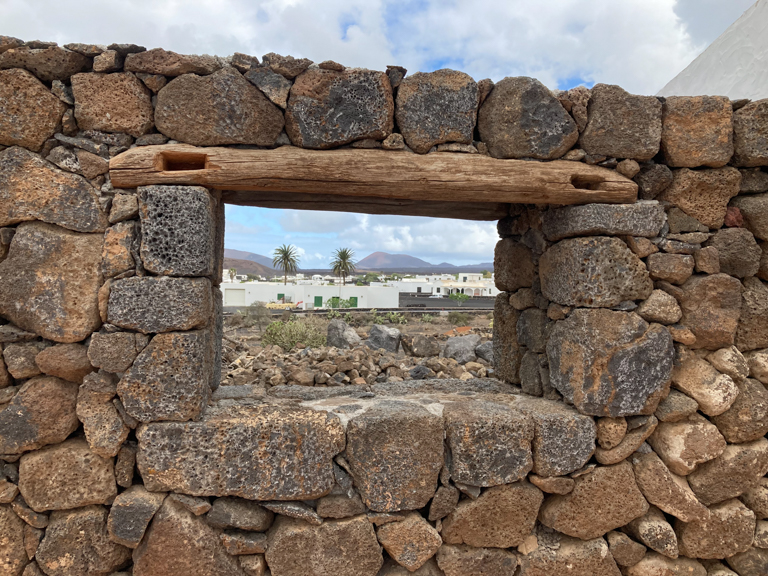
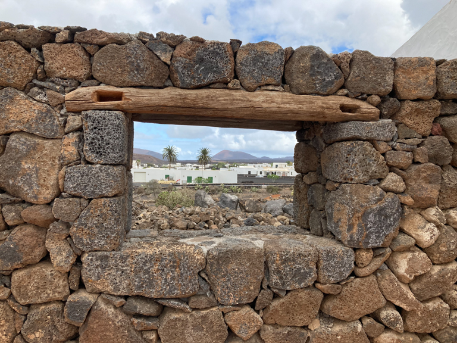
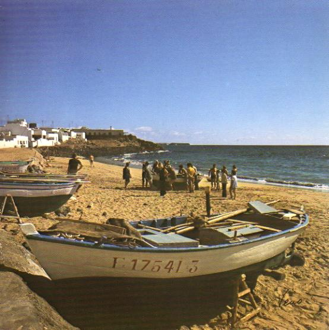
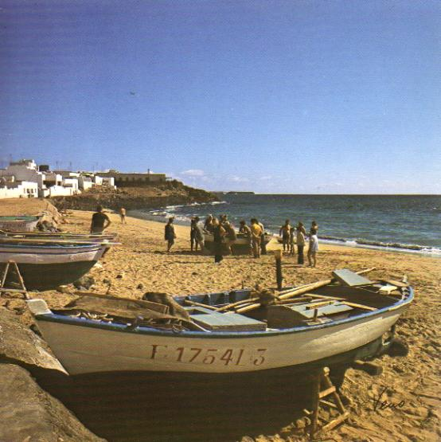
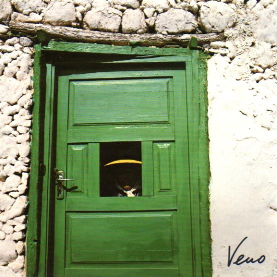
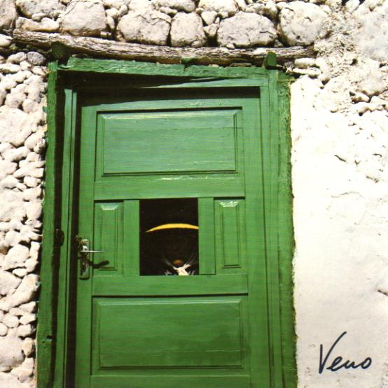

La Casa de Vacaciones "Casa Friedel" en Yaiza, Lanzarote, te invita a unas relajadas vacaciones bajo el sol canario, en un lugar tranquilo en el borde del centro de Yaiza, con vistas a los Montes de Fuego.
La "Casa Friedel" consta de dos apartamentos: la casa principal y la casa secundaria. Pueden reservarse individualmente o en conjunto.
La casa es alquilada directamente por el propietario.

La Casa Friedel se encuentra en Yaiza, el pueblo más grande del sur de la isla, en el borde del Parque Nacional de Timanfaya, lejos de los centros turísticos bulliciosos. Yaiza es el punto de partida para tours a las Montañas del Fuego y otras atracciones de la isla.
En Yaiza hay varios restaurantes, un pequeño supermercado, boutiques, un banco, una oficina de correos y un centro cultural.
La Casa Friedel está situada en el borde oeste del centro de Yaiza, en un lugar tranquilo y alejado de la carretera principal.
Casa principal

- Antigua finca bellamente renovada en el típico estilo canario, ideal para 2-3 personas
- Amplio patio interior lleno de luz y un pequeño patio con vistas a los Montes de Fuego
- Amplia cocina totalmente equipada con lavavajillas, nevera y congelador, y comedor adyacente
- Sala de estar con Wi-Fi y TV, amplio dormitorio con cama doble y lujoso baño, y una habitación individual separada


Apartamento

- Pequeño apartamento ideal para 1-2 personas, con cama doble, sofá, baño con ducha, Wi-Fi y TV
- Patio con ducha exterior y vistas a los Montes de Fuego
- Cocina equipada con lavavajillas, nevera y congelador
 


 


 



| Casa principal | Apartamento | |
|---|---|---|
| Desde 1 semana(1-2 personas): | 100€/día | 50€/día |
| Desde 3 semanas(1-2 personas): | 85€/día | 40€/día |
| Persona adicional: | + 20€/día |


Friedel y Wilf Leitz fueron los dueños de Casa Friedel y lo administraron juntos durante mucho tiempo. La casa fue nombrada en honor a Friedel Leitz, quien la continuó sola después de la muerte de Wilf. Cuando Friedel se jubiló, sus hijos asumieron el cuidado de la casa. Ahora es principalmente atendida por Karin Lübbers.
A continuación, algunas impresiones de Lanzarote capturadas por el ojo fotográfico de Veno. "Veno" es el nombre artístico de Wilf Leitz.


 



 
